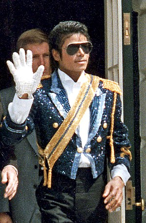
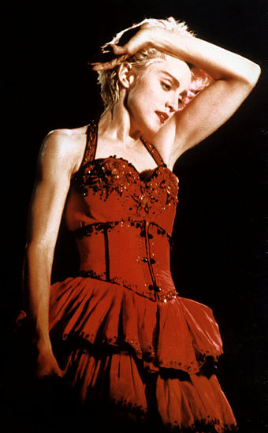

Genuri muzicale populare in anii 80'
Odata cu declinul muzicii disco la sfarsitul anilor 70', au devenit populare stilurile
Dance si "New Wave", cu precadere genurile Pop, Rock alternativ, muzica electronica si Heavy
Metal.
Artisti remarcabili ai perioadei
- Michael Jackson

- Albumul "Thriller" (1982) este cel mai bine vandut din toate timpurile, fiind vandut
intr-un numar exorbitant de exemplare, 25 de milioane doar in perioada 1982-1989
- El este considerat regele "pop"-ului, fiind cel mai de succes artist pop si R & B din
istoria recenta a muzicii
- Melodii iconice:
- "Rock With You" (1980)
- "Billie Jean" (1983)
- "Man In The Mirror" (1988) etc. etc.
- Madonna

- Albumul True Blue (1986) este cel mai bine vandut album produs de o femeie in anii 80'
- A fost numita artistul deceniului de numeroase publicatii, iar melodia ei, "Like a prayer"
a fost complimentata chiar de catre the Rolling Stones: "Este cea mai inalta forma de arta
pe cat se poate pentru o piesa pop"
- Melodii faimoase:
- "Papa Don't Preach" (1986)
- "La Isla Bonita" (1987)
- "Like a Prayer" (1989)